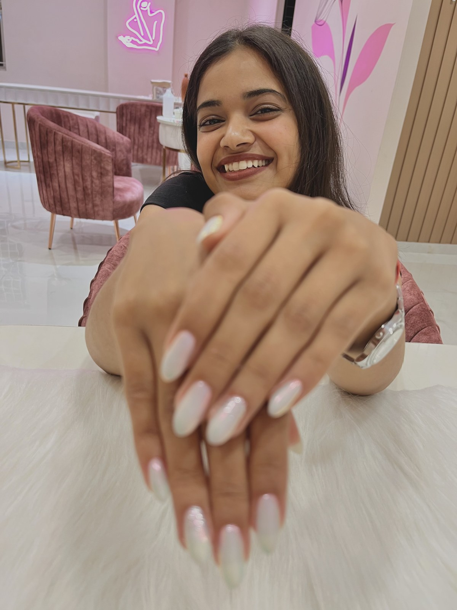

Basic Nail Tech
Nail anatomy, shapes and preparation. Gel polish, gel extensions, removal and introductory art techniques.
View curriculumBeautiful results. Personalized care.
Discover nail art that feels like you, at our nail studio on New BEL Road, Bengaluru.
From a softly polished finish to a little more expression. Explore nail art, polishes, extensions and refills.

Choose a clean colour, a soft shimmer or a French or ombré finish. The original menu includes neon gel, glitter combinations and natural-nail overlays.
Enquire about polishExplore gel extensions, form extensions, in-built French and feet extensions, with gel and acrylic refill options on the published menu.
Discuss your setBring your inspiration. From simple accents to intricate designs, choose details that reflect your personality and occasion.
Browse our workThe published menu includes nail strengthening gel, gel polish removal and extension removal. Ask the studio which service suits your current set.
Ask the studioManicures, pedicures and lashes are also listed on our Instagram profile. Please enquire for availability and current pricing.
View the published price referencePhotographs from the original Nail Revolution website. Follow Instagram for the latest studio work.
Welcome to Nail Revolution, a nail art studio in Bangalore founded by Leesha Chouhan. Her approach centres on creating unique designs that reflect her clients’ personalities.
From subtle and polished to expressive and daring, the studio brings together nail services and nail education in one creative space.
FOUNDER & HEAD NAIL TECHNICIAN
Come experience Nail RevolutionLearn the art of nail design with Leesha Chouhan in Bangalore. Explore the studio’s published Basic, Advance and Pro Nail Tech programs.
Nail anatomy, shapes and preparation. Gel polish, gel extensions, removal and introductory art techniques.
View curriculumAcrylic and gel extensions, refills, advanced nail art, design composition and salon management.
View curriculumSculpting, forms, poly gel, 3D and miniature art, advanced shaping and professional business skills.
View curriculumCurricula reflect the original website. Confirm current fees, schedules, assessment and certification details directly with the academy.
The website lists 2nd floor, BSR Memoirs, 15, New BEL Road, Bengaluru, Karnataka 560054. Instagram also lists New BEL Road. Please confirm directions when arranging your visit.
Call the studio on +91 99861 53243 or send an Instagram message. Your appointment is confirmed only when the studio agrees a date and time.
Share your inspiration with the studio when enquiring. Ask about the technique, time and price for your chosen design before booking.
Yes. The published academy pages describe Basic, Advance and Pro Nail Tech programs. Enquire directly for the current batch schedule, fees and certification details.
Opening hours: please call to confirm.
Choose what you’re interested in, then contact the studio to confirm availability.
Call +91 99861 53243 Message us on InstagramNo online payment or booking is taken here.